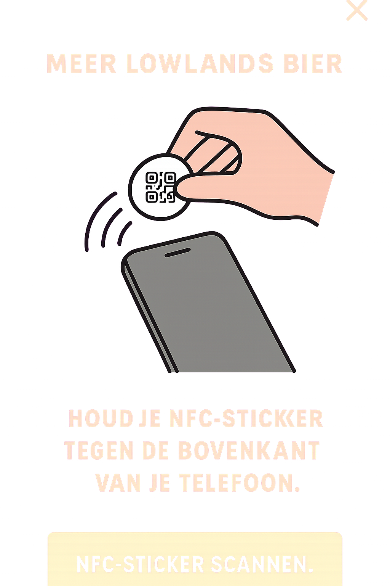

LLET'S SPLIT
MET LLET’S SPLIT GEEF JE EENVOUDIG EEN DIGITALE TOKEN
AAN DE PERSOON DIE JULLIE RONDJE GAAT HALEN.
AAN HET EIND REKEN JE GEMAKKELIJK MET ELKAAR AF.
JE HEBT HIERVOOR DE NFC-STICKER
NODIG DIE JE BIJ DE INGANG KAN AFHALEN.
NFC-STICKER SCANNEN
HOUD JE NFC-STICKER TEGEN DE ACHTERKANT
VAN JE TELEFOON, IN DE BUURT VAN DE CAMERA.
